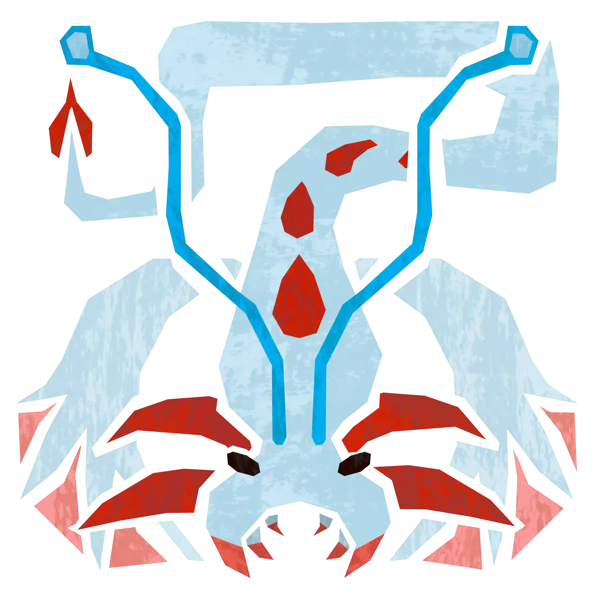

El Kantah es un depredador aéreo con una anatomía muy especial, adaptado para sobrevivir tanto en la espesura de los bosque de Yxi como en las planicies del desierto guefideano.

Su morfología especializada le permite realizar vuelos silenciosos y planeos largos. Sus extremidades superiores, muy alargadas, terminan en membranas palmeadas, las cuales funcionan como alas planeadoras y potentes garras que facilitan maniobras precisas desde las alturas.
A nivel sensorial, su visión es bastante deficiente, posee ojos pequeños y rudimentarios que apenas detectan cambios de luz. Sin embargo, compensa esta deficiencia con un sistema auditivo muy agudo y preciso. Las prominencias membranosas de su rostro funcionan como receptores sonoros, captando el mas mínimo cambio acústico en el ambiente. Gracias a esto, el Kantah localiza y estudia con gran detalles los patrones sonoros de sus presas.

La adaptación más única de esta especie es su tracto vocal, el cual alberga un instrumento acústico sumamente avanzado. Este complejo órgano le provee la capacidad de reproducir casi cualquier sonido del ecosistema con excelente fidelidad. El Kantah imita a la perfección cantos de apareamiento, gritos y llamados de auxilio para atraer a sus víctimas a una emboscada sin escape. Cuando el objetivo se aproxima, desciende para inmovilizarlo con sus fuertes brazos. En ese instante recurre al aguijón de su cola, inyectando una potente neurotoxina que paraliza la presa, garantizando un consumo seguro y sin resistencia.